Où et comment installer TLJH ?
Contents
Où et comment installer TLJH ?#
L’installation de TLJH peut s’effectuer sur toute machine virtuelle avec un système d’exploitation Ubuntu Server 18.04 ou plus récent. Je vous présente ici l’installation sur Azure mais cette installation est aussi possible sur les autres fournisseurs de cloud (AWS, GCP, OVHCloud, Scaleway…).
Warning
Avec l’utilisation du cloud, on peut vite avoir des surprises sur la facturation. Je vous conseille donc de bien vérifier que l’arrêt automatique est activé. Normalement, il est mis en place par défaut à 19h.
Par contre, même si la majeure partie du coût de la machine virtuelle provient de la puissance de calculs (compute), il reste d’autres sources de coûts plus faibles (stockage, réseau…).
☁️ Installation sur Azure#
Documentation officielle
Pour ceux qui maitrisent bien l’anglais, vous pouvez aussi utiliser cette ressource : https://tljh.jupyter.org/en/latest/install/azure.html
Pour les autres fournisseurs de cloud ou une installation sur un serveur privé, vous pouvez utiliser cette ressource : https://tljh.jupyter.org/en/latest/install/index.html
Ce tutoriel se concentre sur l’installation à l’aide de l’interface graphique d’Azure.
Etape 1 : connexion au portail d’Azure#
Vous devez arriver sur une page d’accueil qui ressemble à cela (peut-être avec un fond clair suivant les réglages de votre interface).
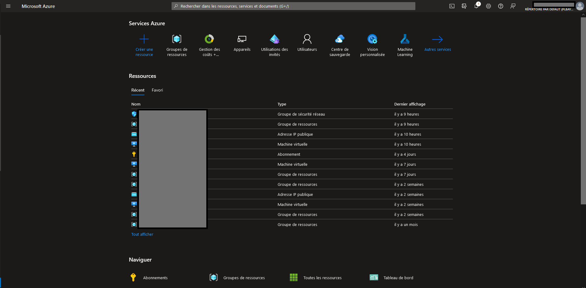
Etape 2 : choix de la machine virtuelle#
Pour créer une machine virtuelle, cliquez sur “Créer une ressource”.
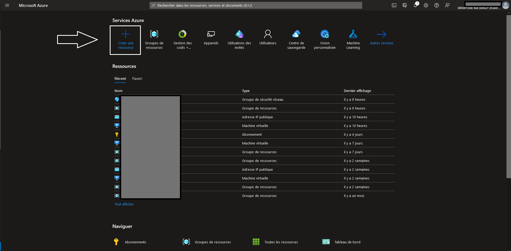
TLJH doit être installé sur un serveur Ubuntu. Recherchez Ubuntu server dans la barre de recherche :
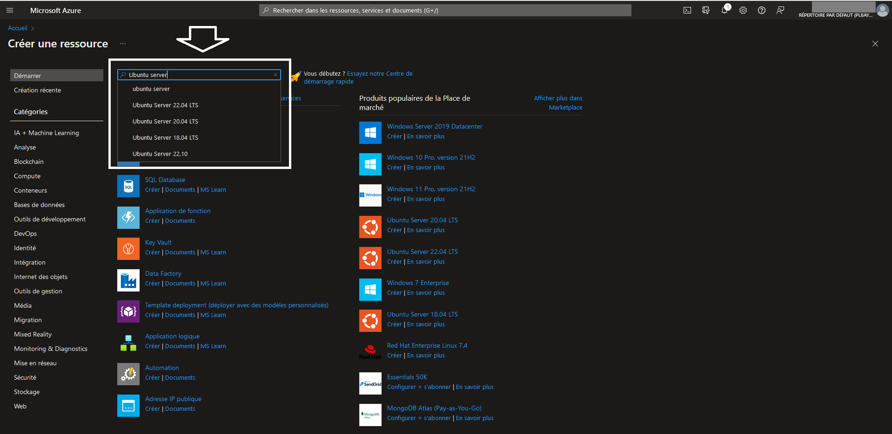
La version d’Ubuntu serveur doit être ultérieure à 18.04. Vous pouvez prendre la version 22.04 LTS :
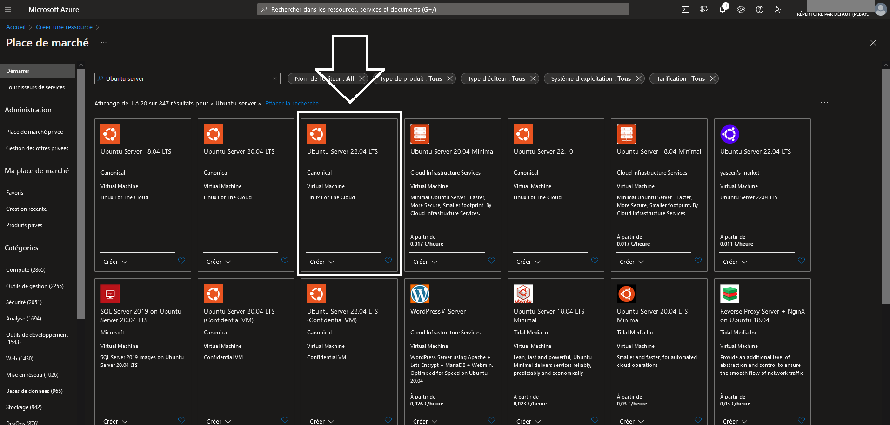
Pour accéder au paramétrage de la machine virtuelle, cliquez sur “Créer” :
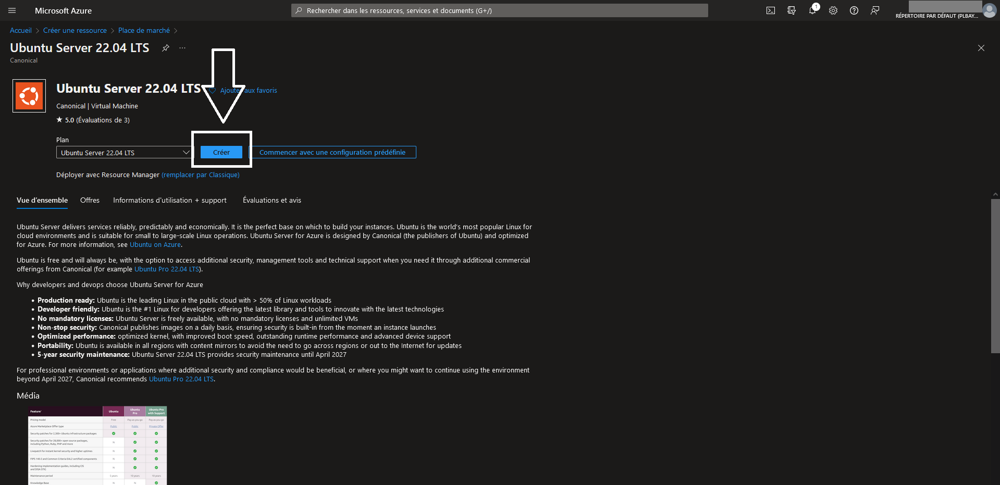
Etape 3 : paramètres généraux#
Après avoir cliqué sur “Créer”, vous arrivez sur cet écran de paramétrage de la machine virtuelle Ubuntu Server 22.04 LTS :
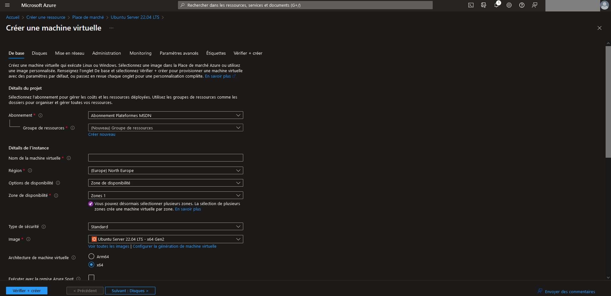
Dans l’onglet des paramètres de base, vous devez remplir les éléments suivants :
Information
Les paramètres non listés doivent être laissés à leur valeur par défaut. Pour plus de détails, vous pouvez regarder cette vidéo : 
Abonnement : sélectionnez le compte qui sera facturé pour cette machine virtuelle
Groupe de ressources : choisissez un nom qui vous permet de retrouver facilement l’ensemble des ressources liées au JupyterHub. Par exemple,
rg-TLJHNom de la machine virtuelle : choisissez un nom qui vous permet de retrouver facilement la machine virtuelle dans le groupe de ressources. Par exemple,
vm-TLJHRégion : ce paramètre correspond au datacenter dans lequel sera déployée la machine virtuelle. Choisissez celui le plus proche de vos utilisateurs pour diminuer la latence.
Options de disponibilité : ce paramètre correspond à la redondance nécesssaire à machine virtuelle si votre utilisation est critique. Dans le cadre de la formation, c’est rarement le cas donc on peut sélectionner “Aucune redondance d’infrastructure requise”.
Taille : ce paramètre correspond à la taille de la machine virtuelle. Ce choix a un fort impact sur la facturation finale. Dans la documentation officielle, il est préconisé de choisir 2 Go de RAM par utilisateur. Ce choix peut être modifié après la création. On peut commencer avec une machine virtuelle de 8 Go de RAM (exemple : “Standard_D2s_v3”).
Type d’authentification : il faut choisir “Mot de passe” pour pouvoir se connecter directement au JupyteHub après le lancement de la machine virtuelle.
Nom d’utilisateur : ce nom sera à utiliser pour se connecter au JupyterHub
Mot de passe : ce mot de passe sera à utiliser pour se connecter au JupyterHub
Confirmer le mot de passe : même mot de passe qu’au paramètre précédent
Sélectionner des ports d’entrée : ajouter les ports 80 pour la connexion HTTP et 443 pour la connexion HTTPS
Etape 4 : stockage#
Après avoir défini les paramètres généraux, on peut passer aux paramètres liés au stockage. Cliquez sur l’onglet “Disques”
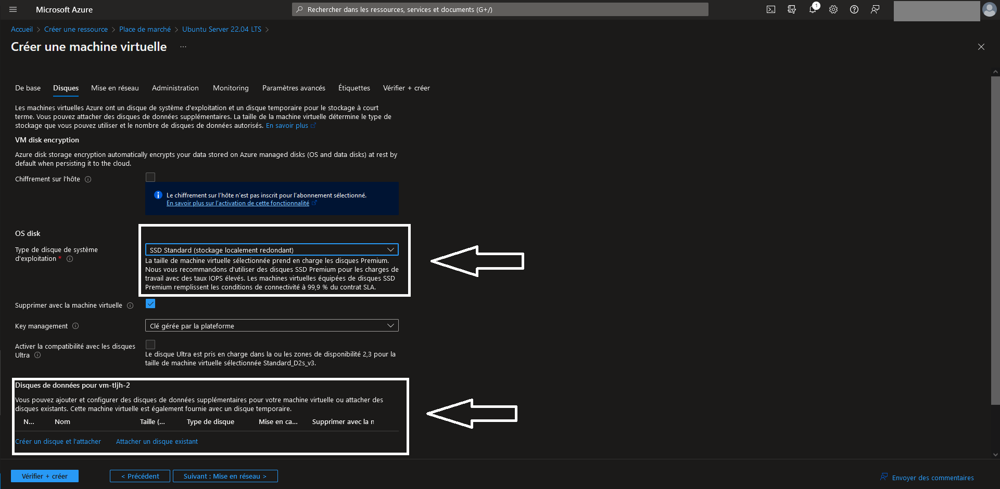
Pour le paramètre “Type de disque de système d’exploitation”, vous pouvez choisir “SSD standard” qui est suffisant dans le cadre de la formation.
Si vous souhaitez utiliser des jeux de données de tailles importantes, vous pouvez ajouter un disque de données. Sinon, vous pouvez vous contenter du disque du système d’exploitation pour ajouter vos données.
Etape 5 : script de démarrage#
Après avoir défini les paramètres du stockage, on peut passer aux paramètres avancés.
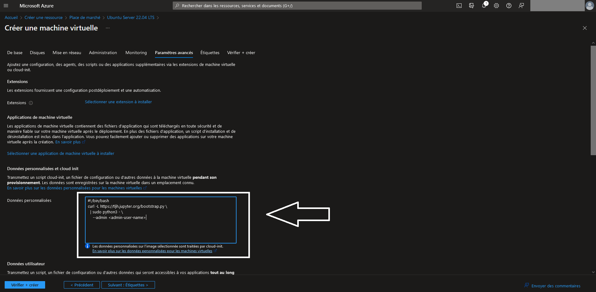
Dans la partie “Données personnalisées”, vous devez ajouter le script de démarrage qui permet l’installation de TLJH sur la machine virtuelle. Vous pouvez copier/coller le code suivant en remplaçant <admin-user-name> par le nom d’utilisateur que vous avez défini dans la partie “paramètres généraux” :
#!/bin/bash
curl -L https://tljh.jupyter.org/bootstrap.py \
| sudo python3 - \
--admin <admin-user-name>
Etape 6 : création de la machine virtuelle#
Après avoir défini les paramètres avancés, on peut passer à l’onglet “Vérifier + créer”.
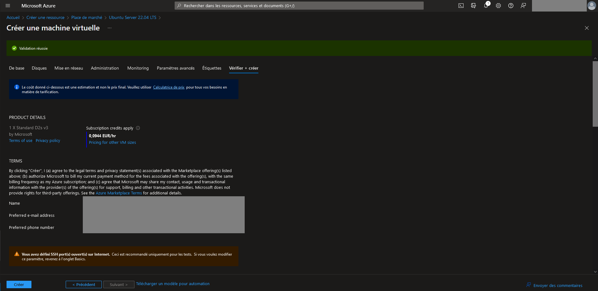
Si tout a été rempli correctement, vous devez voir apparaître un bandeau vert avec la mention “Validation réussie”. Dans ce cas, vous pouvez cliquer sur “Créer” en bas à gauche de l’écran.
Etape 7 : vérification du fonctionnement du Jupyter Hub#
Au bout de quelques minutes, vous devez voir apparaître l’écran suivant avec le message “Votre déploiement a été effectué”. Ceci vous indique que la machine virtuelle a été déployée. Par contre, il faut encore attendre quelques minutes pour que le script d’installation du JupyterHub s’installe complétement.
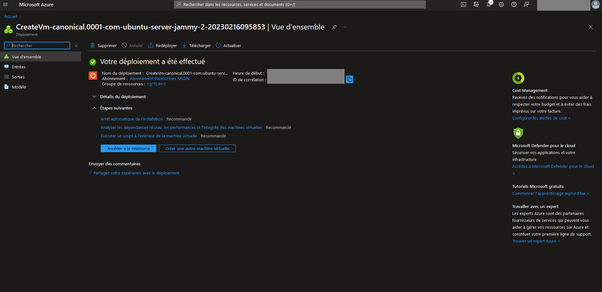
Vous pouvez cliquer sur le bouton “Accéder à la ressource” qui vous amène sur cette page :
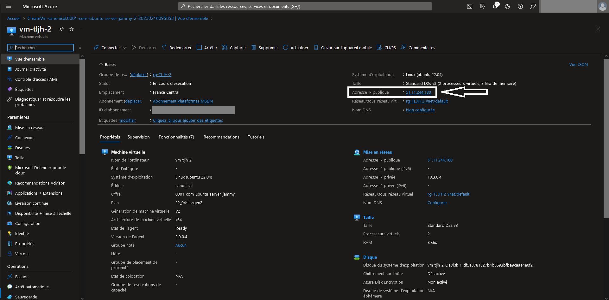
Il vous suffit de récupérer l’adresse IP publique de votre machine virtuelle puis de la coller dans la barre d’url de votre navigateur. Vous devez arriver sur cette page :
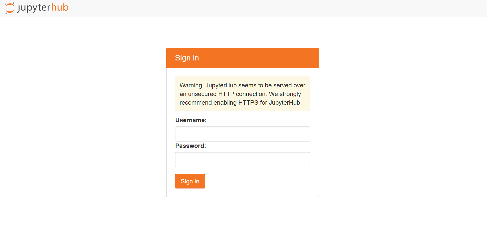
Warning
Si vous avez un message d’erreur, cela peut venir du fait que l’installation de TLJH n’est pas terminée sur la machine virtuelle.
Si vous souhaitez accéder aux logs pour résoudre le problème, vous pouvez vous connecter en SSH avec l’identifiant et le mot de passe admin de la machine virtuelle et exécuter la commande suivante dans le terminal :
sudo journalctl -u jupyterhub
Pour plus d’informations sur la résolution des problèmes, vous pouvez regarder la documentation officielle : https://tljh.jupyter.org/en/latest/troubleshooting/index.html
Vous pouvez taper votre nom d’utilisateur et votre mot de passe définis à la création de la machine virtuelle. Vous devez voir apparaitre l’interface de Jupyter Notebook :
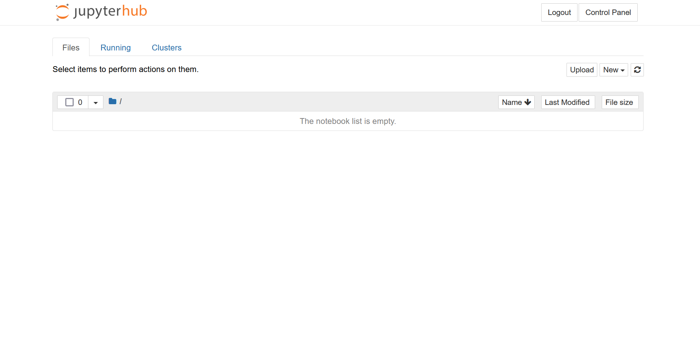
Vous pouvez lancer un Jupyter notebook pour vérifier que le noyau Python fonctionne correctement :
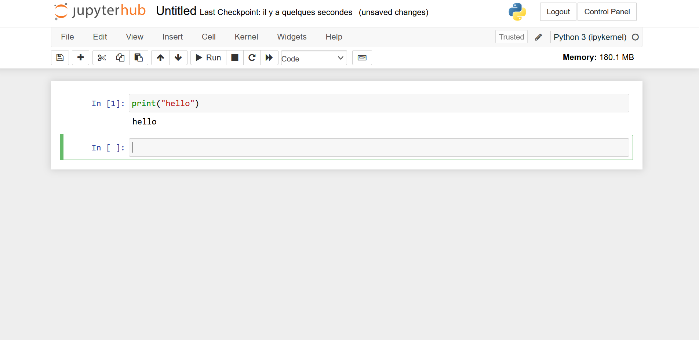
Etape 8 : mise en place de l’HTTPS#
Pour mettre en place la connexion en HTTPS au JupyterHub, il faut d’abord définir un nom de DNS à partir de l’écran d’accueil de la machine virtuelle :
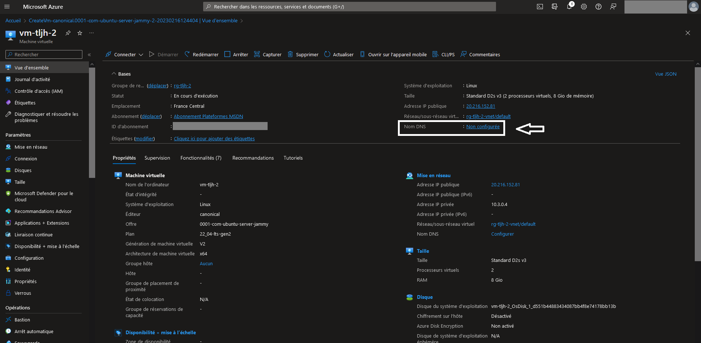
Sur cette page, vous pouvez définir l’étiquette du nom de domaine et cliquer sur “Enregistrer”:
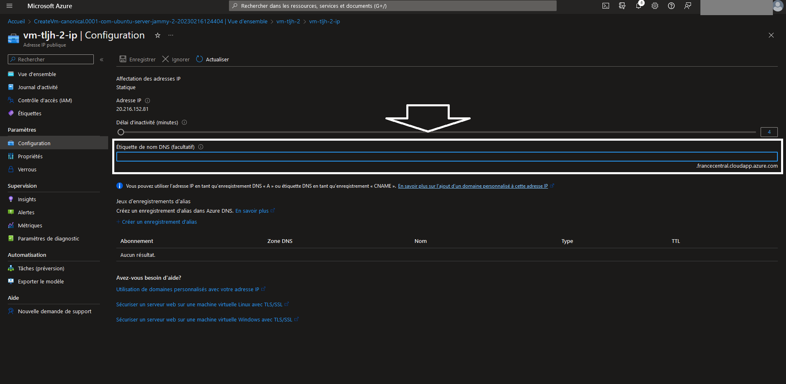
Vous pouvez ensuite revenir sur la page d’accueil de la machine virtuelle. En cliquant sur “Actualiser”, vous devez voir apparaître le nom de DNS que vous avez défini :
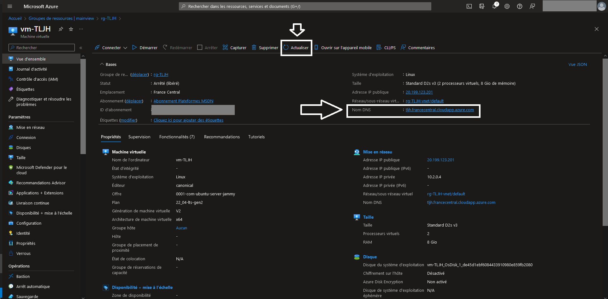
Vous pouvez ensuite vous connecter à cette url, rentrer votre identifiant d’administrateur dans la fenêtre de login du JupyterHub et ouvrir un terminal de cette façon :
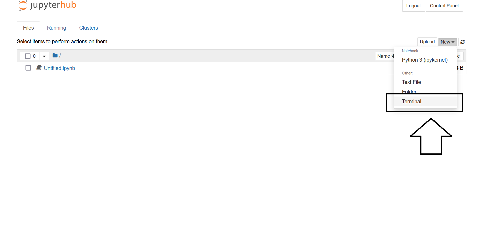
Une fois le terminal ouvert, vous pouvez exécuter les commandes suivantes en remplaçant “you@example.com” par votre adresse email et “yourhub.yourdomain.edu” par le nom de domaine que vous venez de définir dans Azure :
sudo tljh-config set https.enabled true
sudo tljh-config set https.letsencrypt.email you@example.com
sudo tljh-config add-item https.letsencrypt.domains yourhub.yourdomain.edu
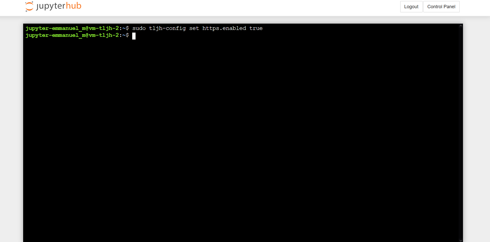
Si vous souhaitez vérifier que les commandes ont bien été enregistrées, vous pouvez exécuter la commande suivante :
sudo tljh-config show
Ensuite, vous devez relancer le proxy à l’aide de la commande suivante :
sudo tljh-config reload proxy
Après quelques minutes, vous pouvez revenir sur l’interface d’Azure pour redémarrer la machine virtuelle. Une fois la machine virtuelle relancée, vous pouvez vous connecter au JupyterHub en HTTPS (le message d’alerte de connexion en HTTP doit avoir disparu).
Information
Pour plus de détails, vous pouvez regarder cette vidéo : 
Lien vers la documentation officielle : https://tljh.jupyter.org/en/latest/howto/admin/https.html